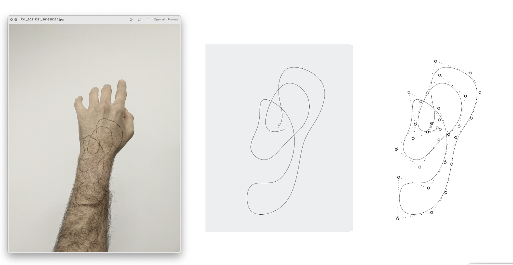

Wearable design study
WHEN? Fall 2021
WHO? Tomás Cabezón and Tingsong "Terrence" Ou
WHY? 48-727: Inquiry into computational design
WHERE? CMU


This Work rises in the intersection of design and technology, design and computation. The aim of this Work is to explore new areas and applications in which digitalization will change the design process and the role that both computers and designers have on it. More concretely, with this Work we want to inquiry a new approach in the design of wearables and explore new pipelines that will enable designers not only to come with new shapes but also with new processes.
This work is organized in two parts, both complementary: the generation of a 3D model, and its subsequent edition. The first part is motivated by technologies like 3D point capture that enable designers to directly work on the shapes without the need of posterior modeling their ideas. In this part, the body itself will be used as the canvas to generate the wearable and the designer will have no restriction. In the second part of the Work, the generated 3D shape will be edited.
Physical to digital
To capture the 3D models the Optitrack Motive MOCAP Software has been used and the data has subsequently been processed using the Grasshopper plugin for Python. The Optitrack software captures the position of the trackers with cameras. To capture this data, a rigid body needs to be created, a solid with at least three trackers. In our case, a triangle with three trackers was attached to a pen. Motion captures the position of these three points all the time, as well as other data such as rotations. In the following images the results of the path tracking can be seen. These images are an example of the new possibilities that a pipeline like the one proposed on this project enables in the design process.




In the digital
In the second part of this work, digital tools will be applied on the 3D model to study the possibilities of combining this new wearable design modeling pipeline with computational design processes like shape grammars or agent-based generative methods.
In the following image the results of this can be seen. The first model is a simple extrusion of a circumference along the path captured with the Motion software. The following two models are the results of using the two previously explained rules
Digital to physical
Thanks to 3D printing, shapes that before required high craftsman skills or were even impossible to fabricate, can nowadays be made. The models of this project are a good example of this. For this project, the models have been 3D printed in resine, nevertheless, it is possible to 3D print the models in resin and later cast it in gold or silver.
This lets designers imagine more complicated shapes without having to be concerned by the fabrications limitations.
The final results of this project can be seen on the following image. On the left, the initial idea painted over the body. On the right, the 3D printed model and a rendered view of it.
In the last image it can be seen that the last piece is broken, this is because the model was too thin, actually thinner than the supports generated for the printing. Due to this design problem, when trying to separate the pieces from the supports, this last one broke. For future work, when this piece is modelled, the initial extrusion should be thicker. This should that even less limitations in the design proccess can be found with this proposed pipeline, there are still limitations, most of them when going from a digital model to a physical one.